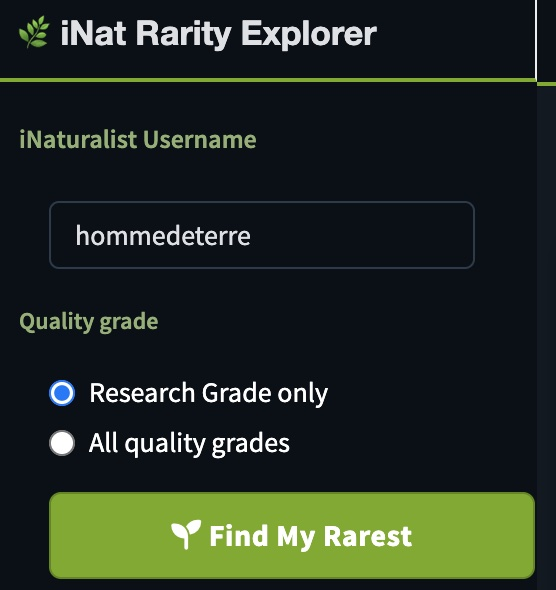
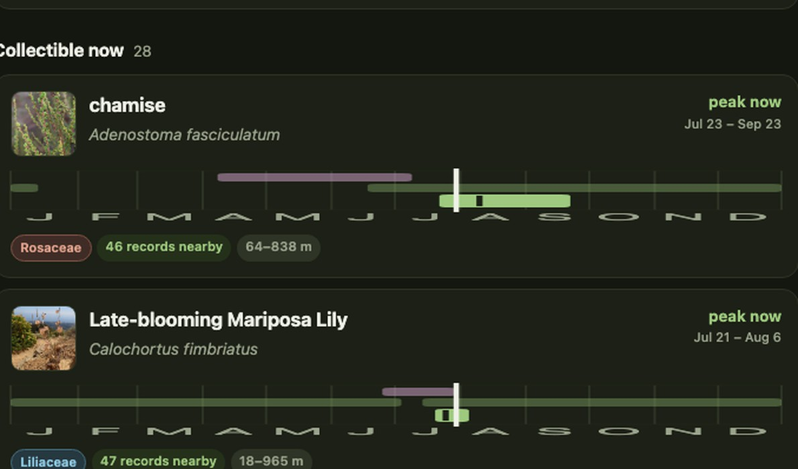

Projects
Interactive tools and applications built for exploring environmental data.

Public Lands Tracker
Track your visits to America's wilderness areas, national parks, and national forests. Toggle layers, search by name, and watch your progress across 1,350+ public lands. Saves automatically in your browser.
Launch Tracker
iNat Rarity Explorer
Discover which of your iNaturalist observations are the rarest on Earth. Ranks every taxon you've logged by its global observation count, with an interactive lollipop chart and a sortable table linking back to each record.
Launch Explorer
SeedScout
Given a place and a date, which native plants have collectible seed right now? Models seed-ripening windows from iNaturalist phenology annotations, with field photos of ripe fruit, handling notes, and a log that tracks each lot through stratification to germination.
Launch SeedScout